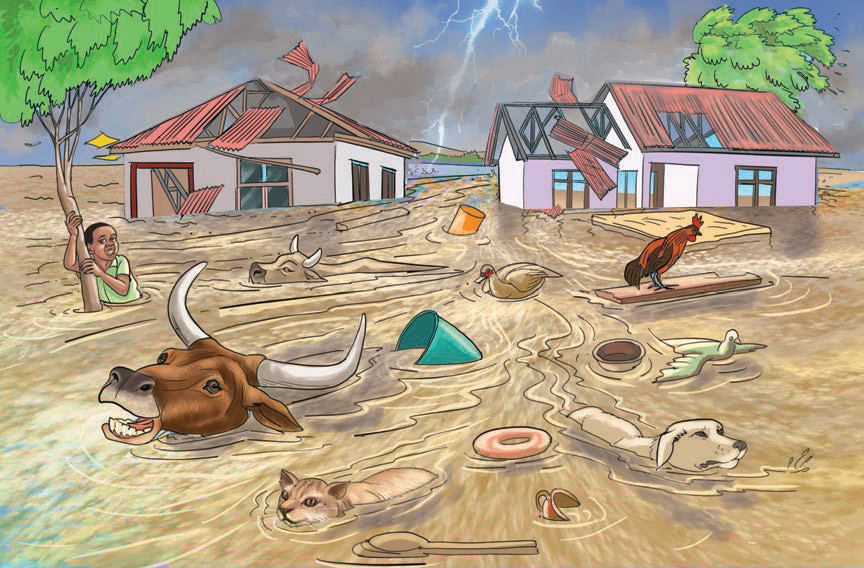

ya tabianchi yamesababisha kiasi cha barafu na theluji kwenye kilele cha mlima Kilimanjaro kupungua sana. Aidha, barafu na theluji katika milima mirefu duniani na ncha ya dunia zimeyeyuka kutokana na mabadiliko ya tabianchi. Barafu inapoyeyuka hugeuka maji ambayo hutiririka na kuelekea baharini na kusababisha maji kuongezeka baharini. Ongezeko la maji baharini husababisha kuongezeka kwa usawa wa bahari. Usawa wa bahari ukiongezeka fukwe za bahari na maeneo yaliyopo kando ya bahari hufunikwa kwa maji.
Vilevile, mabadiliko ya tabianchi huweza kusababisha ukame au mvua kubwa zinazoleta mafuriko na vimbunga. Kielelezo namba 14 kinaonesha athari ya mafuriko yaliyotokana na mabadiliko ya tabianchi.
